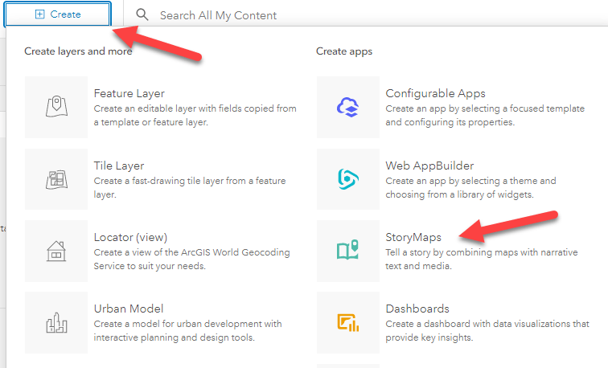
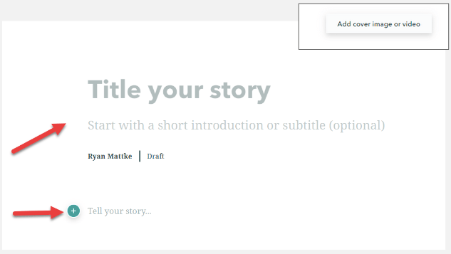
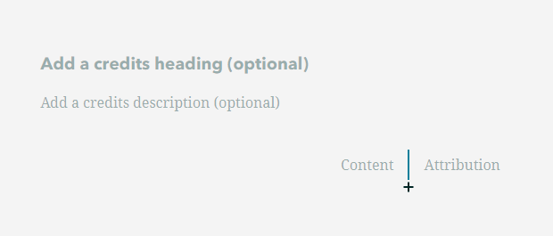
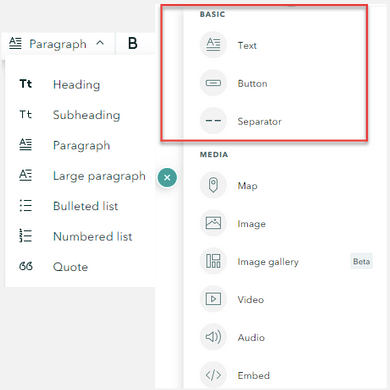
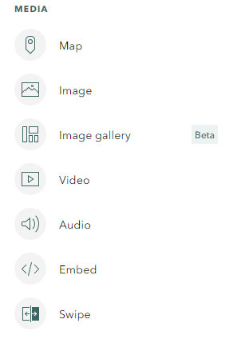
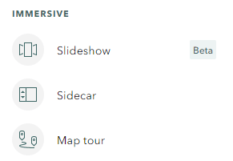
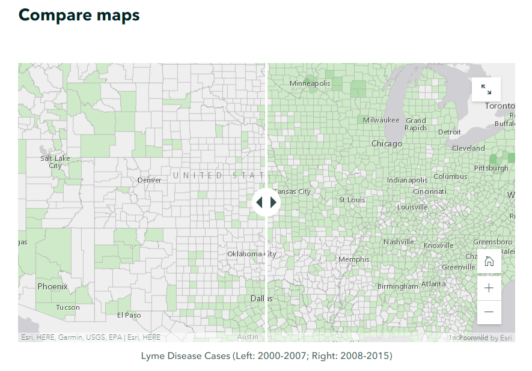
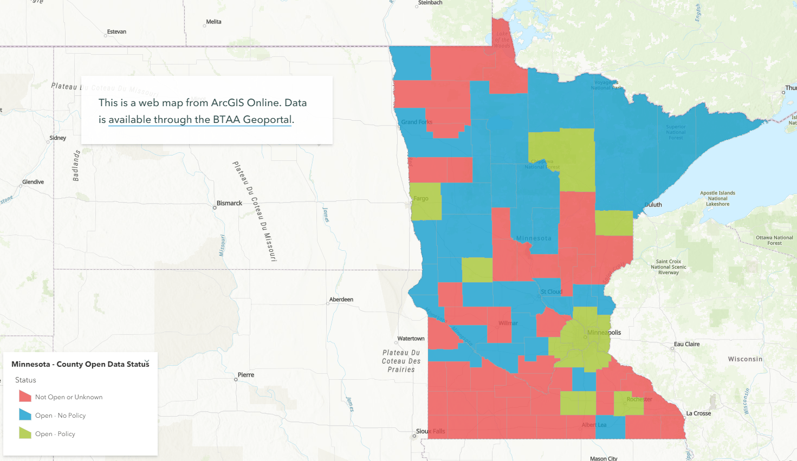
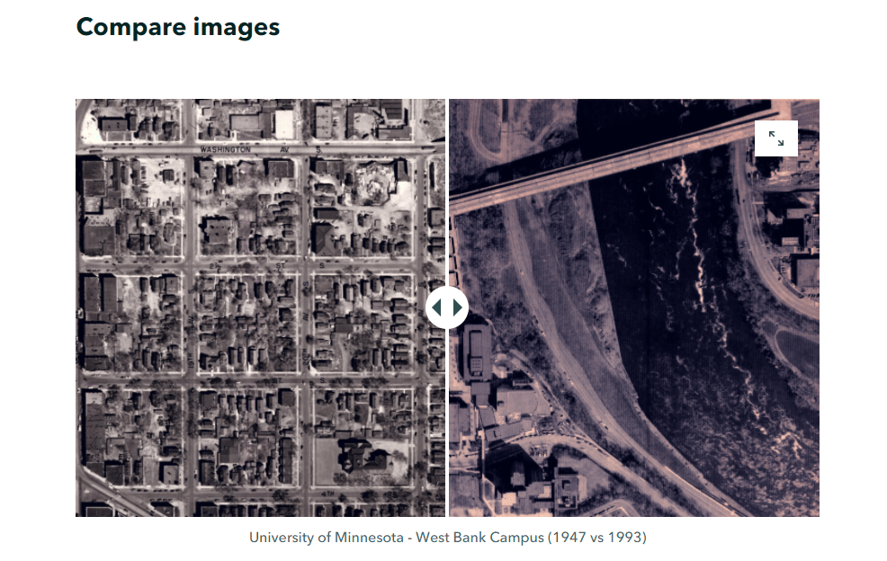

11. Story Maps
Info
Purpose: To provide a brief introduction to the capabilities of ArcGIS Story Maps.
 Estimated time to complete: variable
Estimated time to complete: variable
Prepared by: Ryan Mattke, Map and Geospatial Information Librarian, University of Minnesota (matt0089@umn.edu).
These slides and the accompanying activities are licensed under a Creative Commons Attribution 4.0 International license.
Introduction¶
Story Maps are an application within ArcGIS Online which allows you to integrate web maps with text, images, and other multimedia content.
Story Maps allow you to:
-
Put your web maps in context
-
Compare web maps and data sets
-
Experiment!
Tip
Click on any of the images in this tutorial to zoom in.
{kind=link}
Basics¶
The first step is to log on to ArcGIS Online, go to your Content section, and click Create then Story Maps.

{kind=link}
Give your story a title and a subtitle and/or an introduction.
Add cover image or video (upper right).
Click the “+” symbol to add content to the story map.

{kind=link}
Be sure to take advantage of the options (at the bottom/end of the story map) to add credits and content attribution.

{kind=link}
Basic options for content:
-
Text ‒ Options include heading, subheading, paragraph, , large paragraph, bulleted list, numbered list, and quote
-
Button ‒ To highlight a link with text
-
Separator ‒ Insert a horizontal line

{kind=link}
Media options for content:
-
Map ‒ Insert a web map or web app from ArcGIS Online
-
Image ‒ Upload or link to a jpg, png, gif, or svg file
-
Image Gallery ‒ Insert a gallery of up to 12 images
-
Video ‒ Upload or link to video content
-
Audio ‒ Upload or link to audio content
-
Embed ‒ Embed using iframe code or a web url; this could be a website, or even another story map
-
Swipe ‒ Compare two web maps or images

{kind=link}
Immersive options for content:
-
Slideshow ‒ Full screen, media-focused layout
-
Sidecar ‒ Stationary text/media panel with a scrolling narrative panel that can include web maps
-
Map tour ‒ Showcase a set of locations
Intermediate¶
Once you have the basics down, try something a little more fancy...
Immersive options for content:
-
Slideshow ‒ Full screen, media-focused layout
-
Sidecar ‒ Stationary text/media panel with a scrolling narrative panel that can include web maps
-
Map tour ‒ Showcase a set of locations

{kind=link}
Explore¶
Example Story Map from the Big Ten Academic Alliance Geospatial Data Project

{kind=link}

{kind=link}

{kind=link}